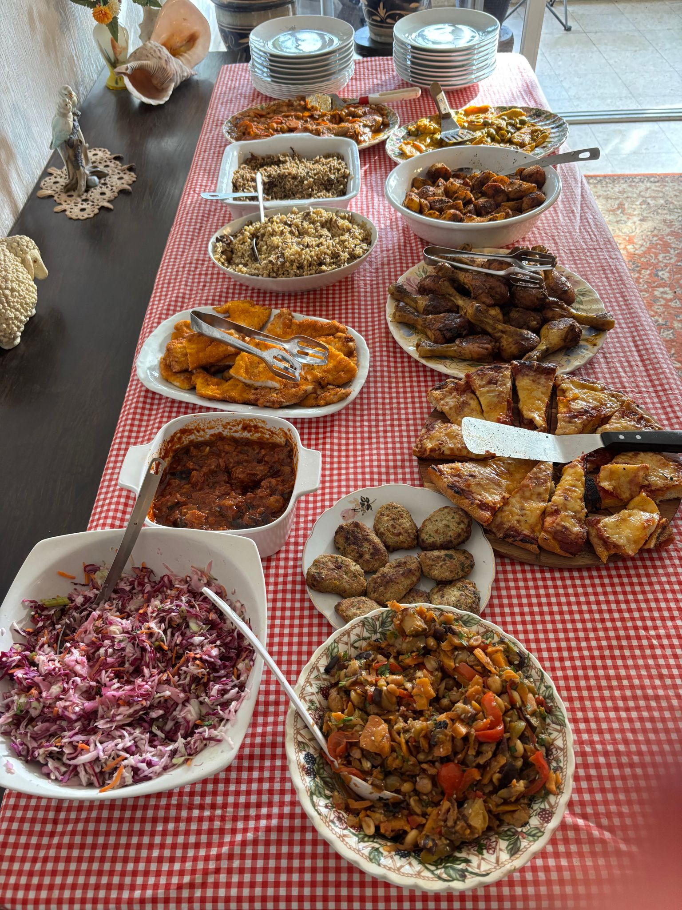
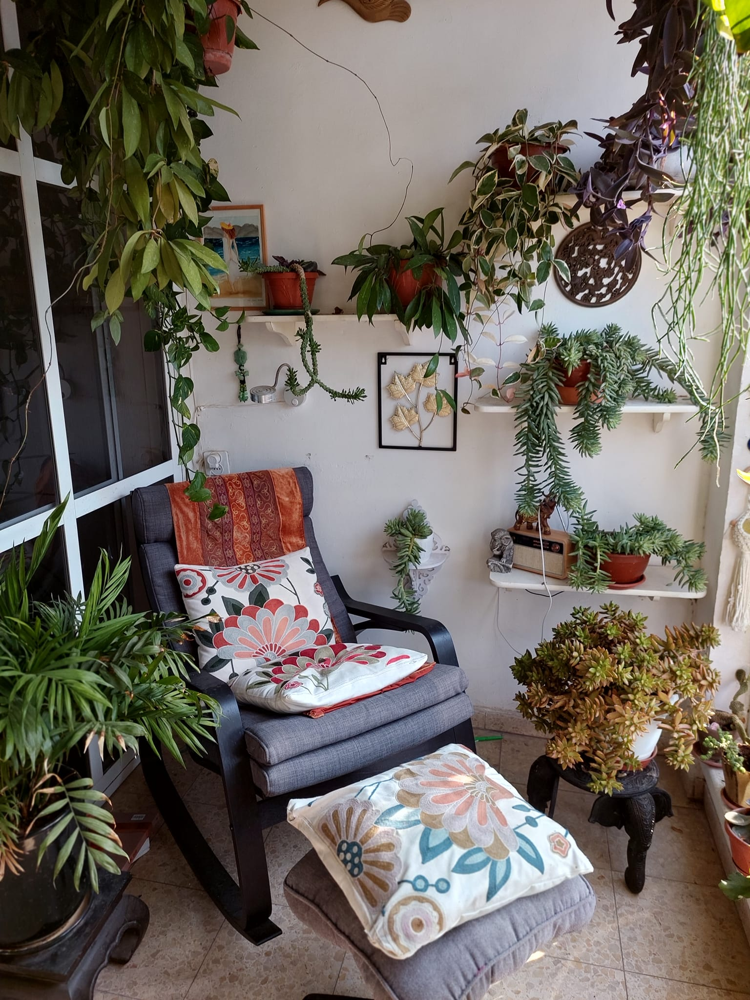
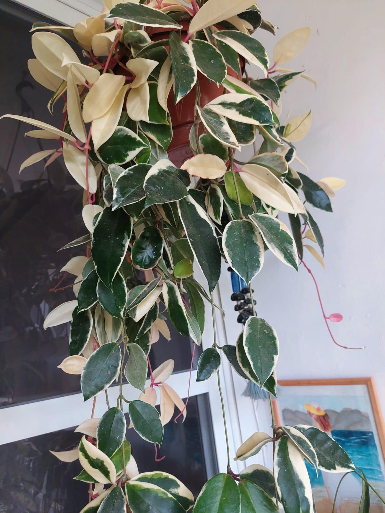

סבתא רחל אוהבת מאוד לגדל צמחים ויש לה את המרפסת הכי יפה בארץ.
תוכלו לראות במרפסת מגוון רחב של צמחים יפים ומטופחים.
לעיתים קרובות סבתא ואברהם מארגנים מפגש לכל הנכדים בו אנחנו אוכלים את האוכל שסבתא מבשלת בעונג רב
תמונות
סבתא חוגגת פורים עם אילי

האוכל של סבתא

המרפסת של סבתא פרח מהמרפסת של סבתא

צמח מהמרפסת של סבתאפרח מהמרפסת של סבתא
שירים אהובים
יצירת קשר
שאלות ותשובות - Web 1, 2, 3
1. שלושה הבדלים עיקריים בין Web 1, Web 2 ו־Web 3:
Web 1: אתרים סטטיים, ללא אינטראקציה עם המשתמש. דפים מעוצבים בפשטות, התוכן מוצג כמו ספר פתוח ללא אפשרות לתגובה או שינוי.
Web 2: אינטרנט עם רשתות חברתיות - משתמשים תורמים תוכן, יוצרים בלוגים, מעלים תמונות, מגיבים ומשתפים. אתרים כמו YouTube, Facebook, Wikipedia.
Web 3: אינטרנט חכם וסמנטי – שימוש באלגוריתמים של בינה מלאכותית, הבנת משמעות של תוכן, מנועי חיפוש מתקדמים, חיבורים בין נתונים ממקורות שונים.
2. דוגמה לתרחיש שימוש - "תופעות לוואי של תרופות":
Web 1: המשתמש נכנס לאתר רפואי סטטי וקורא רשימה ארוכה של תופעות לוואי מתוך עמוד HTML פשוט. אין דרך לשאול שאלה או להתאים את המידע אישית.
Web 2: המשתמש שואל שאלה בפורום רפואי או בפייסבוק, אחרים מגיבים ומספרים מניסיונם. לפעמים יש גם בלוגים עם חוויות משתמשים.
Web 3: מנוע חיפוש סמנטי "מבין" את השאלה, מחפש במסדי נתונים רפואיים, ומחזיר תשובה מותאמת אישית על סמך גיל, מין, תרופות קודמות ועוד – למשל: "בני 70 שנטלו את התרופה חוו כאב ראש ב־60% מהמקרים".